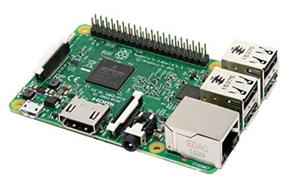
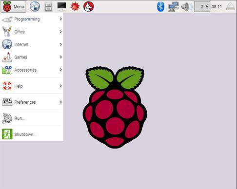
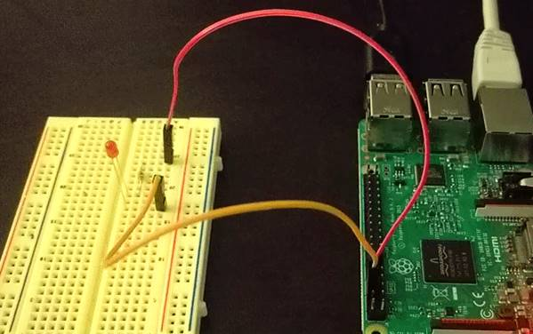
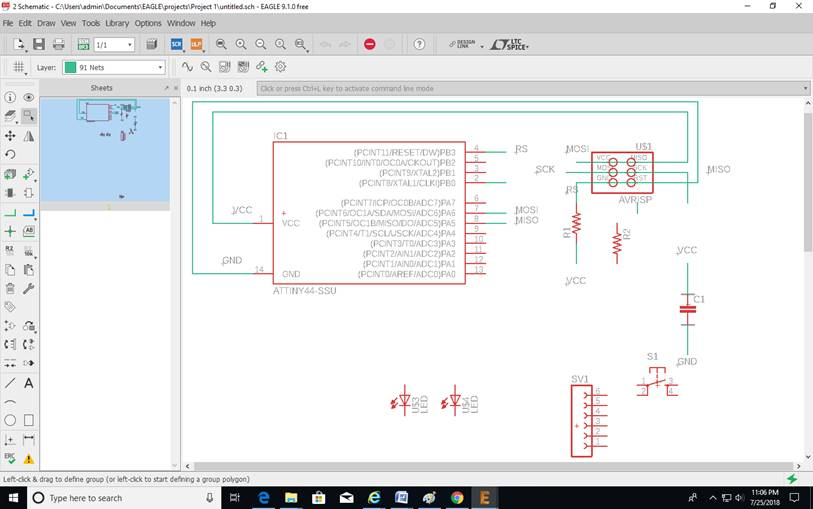
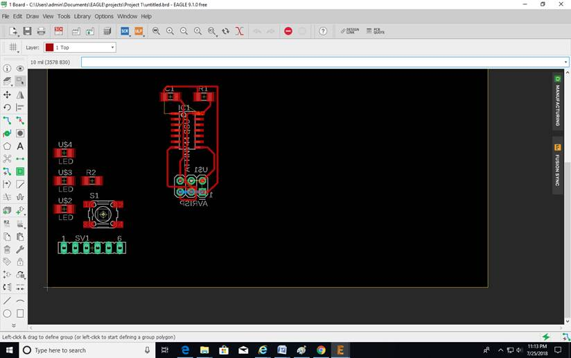
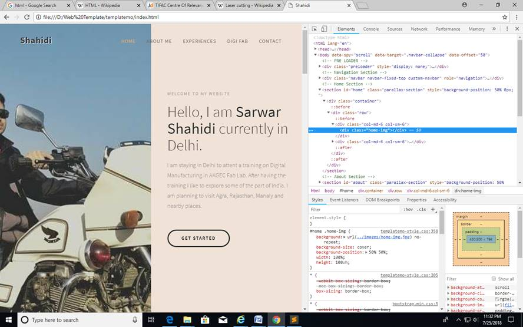
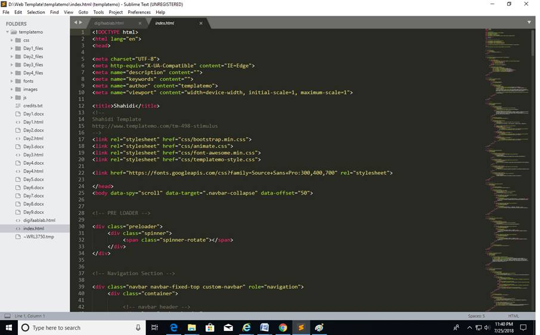

Embedded System
Embedded systems are computer based systems which
provides us the functionality to control any device like washing machine, AC,
coffee maker etc. It has a small computer as Raspberry Pi, or Microcontroller
based system systems. On other word we can say embedded system is a computer system with
a dedicated function within a larger mechanical or electrical system, often
with real-time computing constraints. It
is embedded as part of a complete device often including hardware
and mechanical parts. Embedded systems control many devices in common use today. Ninety-eight
percent of all microprocessors are
manufactured as components of embedded systems.

We use Raspberry PI3 for as out control element and Raspbian os. Raspberry PI3 is a
single board computer with 1.2GHz quad core processor, 1GB memory, but it does not
have any storage. External SD card is used to store data as well as operation
system. It is a small computer used to do few things. So a light weight
operating system called Raspbian is used in raspberry
pi though it can work with Linux and Windows os.

Raspberry pi has many
input output pins which can control electronics switches as relay to control
the bigger machines. The pins can also used to take
input form different sensors as temperature sensor,
light sensor etc.
We use raspberry pi to control LEDs connected directly to it’s i/o pins and also connect pi
with internet and control LEDs.

Electronics Design
EAGLE is a CAD(Computer Aided
Design) software to make circuit design by Autodesk. The interface of Eagle is
user friendly like other CAD software of Autodesk. To design a PCB in Eagle
first we download and install Fab.lbr library file and install in library, which makes
easy for us to find the required component from library.

In design section first we select our required components and
then make pins logical connection using tool Net. After that we switch the mode
to Eagle to Board.

In board mode we connect the pins using
the tools Route. Eagle also provide auto route option
but we do it manually.
For this time we select the property of lines, holes and pads.
The design part it continued on Day 6.
HTML
HTML
is Hypertext Markup Language used to make websites. Web browsers receive HTML documents from a web server or
from local storage and render the documents into multimedia
web pages. HTML describes the structure of a web page semantically and
originally included cues for the appearance of the document.

To
make a webpage in HTML can be use simple Notepad or specialize software like
Sublime Text or Notepad++ can be used. Writhe the HTML code the document have
to save using .html extension. Every
part of the HTML code is to save using tags
Eg.
<head>
Name of Heading </head>
<Tetle>
Name of Title </Title>

Using Sublime text or Notepad++ the tags are shoeing in
different color and so that it is easy to identify the texts and codes
separately.